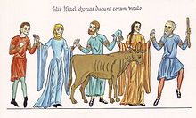

Understanding Mathew 10: 34-36 War and Peace
Jesus said in Mathew 10:34-36, Do not think that I have come to bring peace to the earth.I have not come to bring peace but a sword.For I have come to set a man against his father, and a daughter against her mother, and a daughter in law against her mother in law.And a person’s enemies will be those of his own household.In other places in scripture Jesus is described as a man of peace which seems to contradict this passage.
Moses on Mount Sinai received the Torah and with a good eye went to spread it to the people.When he came down from the mountain he heard a war in the camp below; the people had rebelled and built a Golden Calf under the supervision of his brother Aharon.He broke the first tablets containing the Ten Commandments which was for the highest ideal of spiritual unity.He went back onto the mountain and prayed for forgiveness for the people for their sin of building the Golden Calf.God forgave them and gave to Moses a second set of tablets which became the religion of the Jewish people and the foundation and constitution of their nation called the Law of Moses and Israel.
The first set of tablets was for a higher spiritual ideal than the second tablets.However, Moses saw that mankind could not exist on this high level of spirituality that already had begun a problem, a dispute in the camp.The second set of tablets is the law which the Jewish people study every day.It has in it 613 commandments.Jewish law encourages each person to marry and make a family.It creates a family unit which is part of a tribe in Israel from the same family tree.There were twelve sons of Jacob each one became a tribe in Israel.The Land of Israel was divided into portions given to each tribe.One of the tribes called the Levites were not given a portion in the land.The Levites were a family of priests which worked in the holy temple.They lived on the charity given to them from the other tribes.The Jewish people are one family the children of Abraham, Isaac and Jacob, the biblical fathers.
The spirituality of the second tablets was on a lower level than the spirituality of the first tablets.However, the second tablets was a more practical solution for the children of Israel.If the children of Israel were perfectly righteous the first tablets would have worked for them to be their law.They rebelled against the ideal of the spirituality of the first tablets when they made the Golden Calf.Even Aharon the brother of Moses realized that it wouldn’t work for the children of man.
The Nation of Israel had a sin before it was established which was the sin of making the Golden Calf.Due to the sin there was something lacking which each person needed but was missing.Even today in Judaism there is something lacking.The Jews everyday pray for the coming of the Messiah.They need the Messiah to bring them back to their land and establish again their nation in Israel.However the Lubavitcher Rebbe the greatest sage of our age said that if they will return to the way of the past again they will find that there is something lacking due to the sin of the Golden Calf.King David saw that there was something missing and in Psalms called out for help.King Solomon in Ecclesiastes describes that essence which is lacking and begins his essay with the words, 'Vanity of vanity everything is vanity.'
The sin of the Golden Calf left an emptiness which needed to be filled.Life in Israel at the times of King Solomon was the best life which the Jewish people ever experienced.They had built the holy temple.Each person had a portion of land, family and livelihood.There was still something lacking which was in the first set of tablets that had been broken and replaced with Jewish law of today.The first set of tablets called for perfection which was not in the second set of tablets.This level of perfection was too high for the people and they rebelled against it.The ideal of the Messiah in Mathew is against family units and nationalism an ideal of globalization One God, One World, One Religion, all men are created equal with Jesus as the King of the World after his resurrection.Moses and Elijah come to visit Jesus.
In Mathew 10:34, Jesus was bringing to the world a new light.The new light is the light of rebellion, the sword of rebellion.The new light described by Jesus opposes family life, nationalism like was established in the Old Testament.The light of Jesus is called the light of the Messiah.Judaism needed the Messiah.It still needs the Messiah.The leaders of the Jewish people did not accept Jesus as the Messiah.They already had received the message in the breaking of the first tablets by Moses that Messianic life was not practical; too high of an ideal.Everyone dreams of Messianic life like described in Isaiah, the wolf will live with the lamb, the leopard will lie down with the goat.It was not practical at the time of Mount Sinai when the first tablets were broken.It still is not practical to surrender Nationalism for Globalization.
The attempt by Jesus to bring the Messiah to the world was successful.However he could not bring to the world Messianic life and correct the world.Maimonides in his work regarding the times of the coming of the Messiah says even at times of the Messiah the world will continue to be according to the laws of nature.According to the laws of nature, there will still be family units and nationalism.Moses and Elijah come to visit Jesus.Moses and Elijah already tried to build a Messianic world and failed.Now was the time to try again.The world today has the Messiah but the world continues as before.
Socialism is an ideal which some liberals in America are trying to bring back.In Venezuela socialism was one of the causes of its present state of poverty.According to the ideal of Socialism all the capital of the nation is divided equally amongst the people.If there is no corruption in the government and there is wealth in the nation socialism works.Corruption in the government is one cause of breakdown of the socialist ideal.Another cause is when there is a famine in the land.When there is a famine in the land, there is not enough food for everyone to share.One piece of bread when distributed between ten people is not enough and all the ten people will die.Socialism also disrupts the family unit.Naturally people want to help their children and family first.The mother suffers the pains of childbirth which is the natural incentive for her to worry first about her own.Socialism is fighting the natural instincts which are in humanity.The Talmud teaches that first and most important is to help the people of your city with charity.First comes your family.The incentive to succeed to build a livelihood is greater when the personal gain is greater.People want wealth.They also are concerned about the poor.Everyone is important.According to Jewish law a person is urged to give up to one tenth of his income to charity and no more.90% belongs to the house with the blessings to become rich.Socialism gives less of an incentive to become rich and succeed.In socialism ideally you give your life for your nation without self-interest.People rebel against their nation when there is poverty.
Mathew presents again the Messianic ideal which had already failed in the times of Moses.Jesus could not change the world.The world needed the Messiah to have an ideal and a dream.Jesus and Christianity gave to the world this ideal.Judaism was a more practical way of life but was only for Jews living in a small land in the Middle East.All people would not become Catholic priests or nuns.Therefore it was necessary to make Christianity a religion with laws including family laws of marriage and divorce.Later came Islam to reinforce the concept of religion like Judaism less idealistic more practical.As a result there are three religions in the world.The world has the Messiah but the world still has not changed.
The movement of Globalization including socialism continues to fail.These are important ideals but not practical for imperfect people.When Jesus said in Mathew 10: 34-36 'Don’t think that I have come to bring peace to the earth, I have not come to bring peace but a sword,' he was already admitting that he would fail to globalize the whole world.In many other places in scripture Jesus is called a man of peace which contradicts these passages in Mathew.Christianity is a movement to globalize the whole world, to anoint the Messiah of World Unity and Peace but the world remains naturally a group of families and nations on earth separate and united.Islam came to reinforce nationalism.Judaism came before Islam the way of Religious Nationalism.In the same way Mathew inaugurated the Messiah to the whole world even though he was not able to change the nature of the world; the Lubavitcher Rebbe in the last generation failed to bring the redemption of the Jewish people.After Israel conquered the land in the six day war; Ariel Sharon withdrew from the Gaza strip; Intifada continues; there is no peace in the land.Nevertheless, the Lubavitcher Rebbe inaugurated for many of his followers the eternal Messiah the son of David, the Jewish National Messiah.Twenty years after his death, these fervent followers declare 'Long Live the Rebbe the King the Messiah.'
You don’t have to be a genius to see the hand of God in life and in the development of religion.The Jewish people are called the Children of the Book referring to the Torah.Moses brought into the world the Torah, the five books of Moses, the Old Testament for every man to see in it the hand of God in life and in the history of the world.The first thing to know is that God is the creator of the world; there is a divine hand in creation the first passage of the Bible, 'In the beginning God created the heavens and the earth.'Everything that God created has a purpose even if we sometimes don’t understand it.The two great purposes of creation are spiritual globalization in the words of the prophets, God should be one in the whole earth, he should be one and his name should be one.The second purpose of creation is the perfection of the family unit and the nations of the world through acceptance of the divine law.To fulfill this purpose is needed two Messiahs.This is the teaching of the Zohar, The book of Splendor.
Share on Facebook Tweet Follow us
Posted On: 2019-04-06T00:00:00
Posted By: David Wexelman



Content Date: 2019-04-06
Download Date: 2021-07-09
Document ID: L0C04EW8O